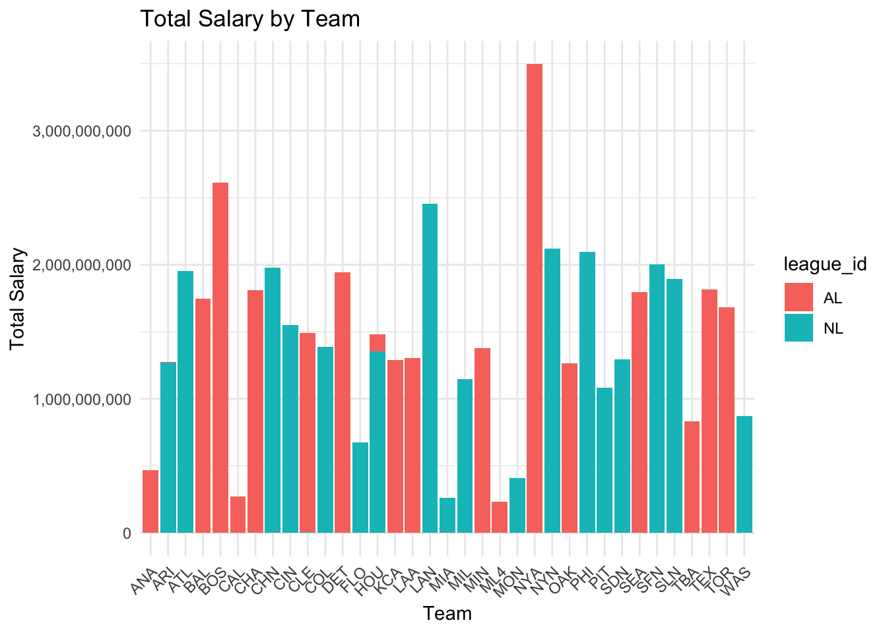
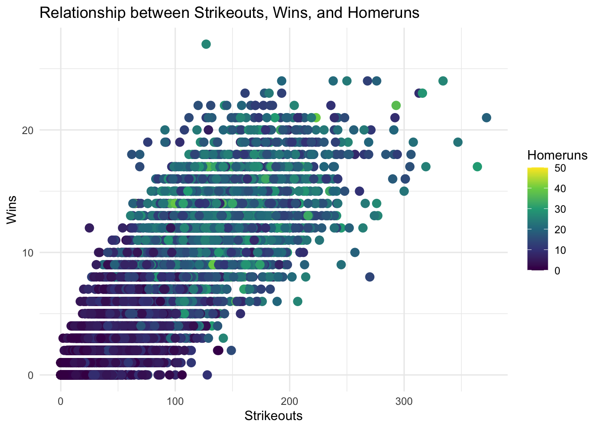
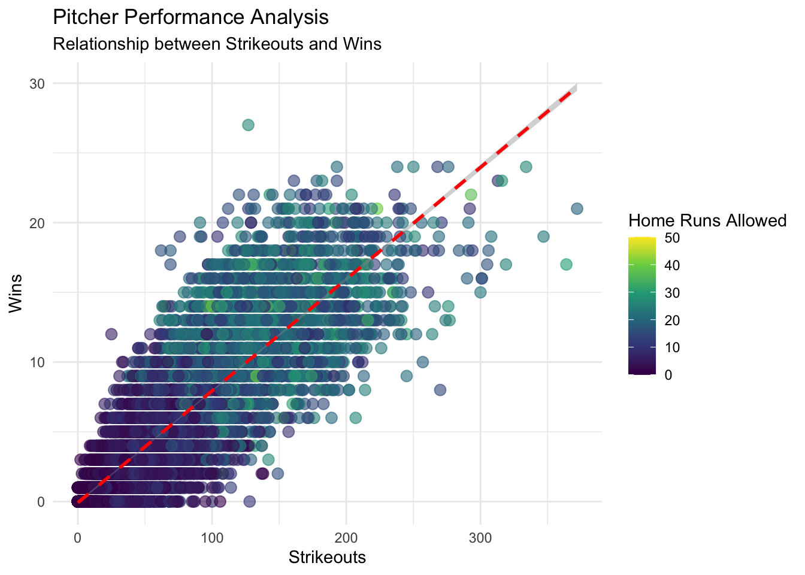
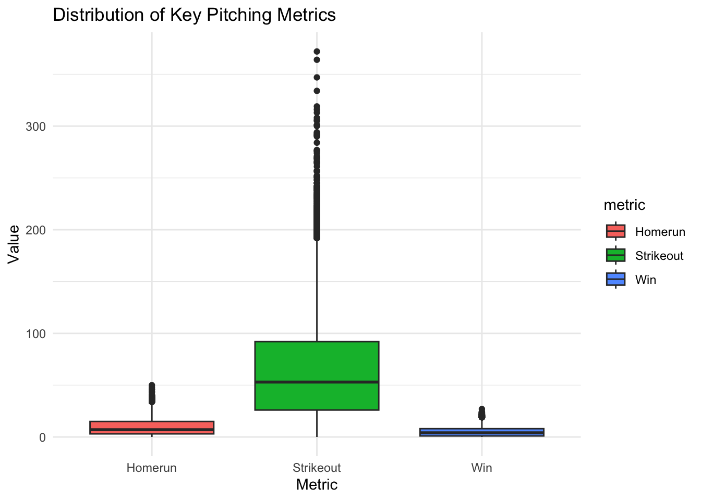

First we understand what is salary data indicate understand the relation between variables. Second we understand what is the second database (Pitching) understand and wrangle that data base so we can understand it better. we try to find the common variables in the two data sets and try to find relation out of the two data sets. Unusual data that affect the physical or the sport side of the game.
pitching <-read.csv("data/The History of Baseball dataset/pitching.csv")#View(pitching)
ggplot(teamSalary, aes(x = team_id, y = team_salary, fill = league_id)) +geom_bar(stat ="identity") +theme_minimal() +labs(title ="Total Salary by Team",x ="Team",y ="Total Salary") +theme(axis.text.x =element_text(angle =45, hjust =1)) +# Rotate x-axis labels if neededscale_y_continuous(labels = scales::comma) # Format salary with commas

library(ggplot2)library(dplyr)ggplot(temp, aes(x = Strikeout, y = Win, color = Homerun)) +geom_point(size =3, na.rm =TRUE) +theme_minimal() +labs(title ="Relationship between Strikeouts, Wins, and Homeruns",x ="Strikeouts",y ="Wins",color ="Homeruns") +scale_color_viridis_c() # Using viridis color palette for better visibility

# Second approach: Two separate panels showing relationships# Using facet_wrapggplot(temp) +facet_wrap(~"Strikeouts vs Wins | Homeruns vs Wins", nrow =1) +geom_point(aes(x = Strikeout, y = Win), color ="blue", na.rm =TRUE) +geom_point(aes(x = Homerun, y = Win), color ="red", na.rm =TRUE) +theme_minimal() +labs(title ="Relationships with Wins",x ="Count",y ="Wins")
# 4. Scatter plot with trend linesggplot(temp, aes(x = Strikeout, y = Win)) +geom_point(aes(color = Homerun), size =3, alpha =0.6) +geom_smooth(method ="lm", se =TRUE, color ="red", linetype ="dashed") +theme_minimal() +labs(title ="Pitcher Performance Analysis",subtitle ="Relationship between Strikeouts and Wins",x ="Strikeouts",y ="Wins",color ="Home Runs Allowed") +scale_color_viridis_c()
`geom_smooth()` using formula = 'y ~ x'
Warning: Removed 14047 rows containing non-finite outside the scale range
(`stat_smooth()`).
Warning: Removed 14047 rows containing missing values or values outside the scale range
(`geom_point()`).

# 5. Box plots for distribution analysisggplot(temp %>%gather(key ="metric", value ="value", c(Strikeout, Win, Homerun))) +geom_boxplot(aes(x = metric, y = value, fill = metric)) +theme_minimal() +labs(title ="Distribution of Key Pitching Metrics",x ="Metric",y ="Value")
Warning: Removed 42141 rows containing non-finite outside the scale range
(`stat_boxplot()`).

library(ggplot2)library(dplyr)# pitching <- pitching %>%# mutate(decade = paste0(floor(year / 10) * 10, "s")) # Group years into decades# # 1. Wins and Losses (Bar Chart)# ggplot(pitching, aes(x = year , group = team_id)) +# geom_bar(aes(y = w, fill = "Wins"), stat = "identity", position = "dodge") +# geom_bar(aes(y = l, fill = "Losses"), stat = "identity", position = "dodge") +# facet_wrap(~decade, scales = "free_x") + # Separate plots for each decade# labs(title = "Wins and Losses by Year", x = "Year", y = "Count") +# scale_fill_manual(values = c("Wins" = "blue", "Losses" = "red")) +# theme_minimal()# # # 2. Earned Run Average (Line Chart)# ggplot(pitching, aes(x = yearID, y = ERA, group = playerID, color = playerID)) +# geom_line() +# labs(title = "Earned Run Average Over Time", x = "Year", y = "ERA") +# theme_minimal()# # # 3. Strikeouts and Walks (Scatter Plot)# ggplot(, aes(x = SO, y = BB, color = playerID)) +# geom_point() +# labs(title = "Strikeouts vs. Walks", x = "Strikeouts", y = "Walks") +# theme_minimal()# # # 4. Opponent’s Batting Average (Heatmap)# your_data %>%# group_by(teamID, yearID) %>%# summarize(avg_BAOpp = mean(BAOpp, na.rm = TRUE)) %>%# ggplot(aes(x = yearID, y = teamID, fill = avg_BAOpp)) +# geom_tile() +# labs(title = "Opponent's Batting Average Heatmap", x = "Year", y = "Team") +# scale_fill_gradient(low = "blue", high = "red") +# theme_minimal()# # # 5. Compare Years (Stacked Area Chart)# your_data %>%# group_by(yearID) %>%# summarize(total_R = sum(R, na.rm = TRUE), total_GF = sum(GF, na.rm = TRUE)) %>%# pivot_longer(cols = c(total_R, total_GF), names_to = "Metric", values_to = "Value") %>%# ggplot(aes(x = yearID, y = Value, fill = Metric)) +# geom_area(alpha = 0.7) +# labs(title = "Runs Allowed vs. Games Finished Over Time", x = "Year", y = "Count") +# scale_fill_manual(values = c("total_R" = "orange", "total_GF" = "purple")) +# theme_minimal()# # ```# ```{r}# temp |> # filter(year == 2010) |> # ggplot( aes(x = Win, y = salary) , color = year) +# geom_point(alpha = 0.7, color = "blue") +# geom_smooth( color = "red") +# labs(title = "Relationship Between Wins and Salary", # x = "Wins", y = "Salary") +# facet_wrap(~ league_id)+# theme_minimal()
Source Code
```title : draft to understand the data ``````{r}library(tidyverse)salary <-read.csv("data/The History of Baseball dataset/salary.csv")str(salary)```First we understand what is salary data indicate understand the relation between variables.Second we understand what is the second database (Pitching) understand and wrangle that data base so we can understand it better.we try to find the common variables in the two data sets and try to find relation out of the two data sets.Unusual data that affect the physical or the sport side of the game.```{r}pitching <-read.csv("data/The History of Baseball dataset/pitching.csv")#View(pitching)``````{r}temp <- salary |>left_join(pitching) |>select(c("player_id","year","team_id","g","so","w","salary","league_id","hr")) |>rename("Game"="g","Strikeout"="so","Homerun"="hr","Win"="w") view(temp)``````{r}teamSalary <- temp |>mutate(team_id =as.factor(team_id)) %>%group_by(team_id,league_id) %>%summarise(team_salary =sum(salary, na.rm =TRUE),.groups ='drop')``````{r}ggplot(teamSalary, aes(x = team_id, y = team_salary, fill = league_id)) +geom_bar(stat ="identity") +theme_minimal() +labs(title ="Total Salary by Team",x ="Team",y ="Total Salary") +theme(axis.text.x =element_text(angle =45, hjust =1)) +# Rotate x-axis labels if neededscale_y_continuous(labels = scales::comma) # Format salary with commas``````{r}library(ggplot2)library(dplyr)# First approach: Scatter plot with strikeouts vs wins, colored by homerunsggplot(temp, aes(x = Strikeout, y = Win, color = Homerun)) +geom_point(size =3, na.rm =TRUE) +theme_minimal() +labs(title ="Relationship between Strikeouts, Wins, and Homeruns",x ="Strikeouts",y ="Wins",color ="Homeruns") +scale_color_viridis_c() # Using viridis color palette for better visibility# Second approach: Two separate panels showing relationships# Using facet_wrapggplot(temp) +facet_wrap(~"Strikeouts vs Wins | Homeruns vs Wins", nrow =1) +geom_point(aes(x = Strikeout, y = Win), color ="blue", na.rm =TRUE) +geom_point(aes(x = Homerun, y = Win), color ="red", na.rm =TRUE) +theme_minimal() +labs(title ="Relationships with Wins",x ="Count",y ="Wins")``````{r}library(dplyr)library(ggplot2)library(corrplot)# 1. Summary statistics for pitching metricspitching_summary <- temp %>%summarise(avg_strikeouts =mean(Strikeout, na.rm =TRUE),avg_wins =mean(Win, na.rm =TRUE),avg_homeruns =mean(Homerun, na.rm =TRUE),k_per_win =mean(Strikeout/Win, na.rm =TRUE) )# 2. Correlation matrixcorrelation_matrix <-cor(temp %>%select(Strikeout, Win, Homerun), use ="complete.obs")# 3. Visualize correlationscorrplot(correlation_matrix, method ="color", type ="upper",addCoef.col ="black", tl.col ="black")# 4. Scatter plot with trend linesggplot(temp, aes(x = Strikeout, y = Win)) +geom_point(aes(color = Homerun), size =3, alpha =0.6) +geom_smooth(method ="lm", se =TRUE, color ="red", linetype ="dashed") +theme_minimal() +labs(title ="Pitcher Performance Analysis",subtitle ="Relationship between Strikeouts and Wins",x ="Strikeouts",y ="Wins",color ="Home Runs Allowed") +scale_color_viridis_c()# 5. Box plots for distribution analysisggplot(temp %>%gather(key ="metric", value ="value", c(Strikeout, Win, Homerun))) +geom_boxplot(aes(x = metric, y = value, fill = metric)) +theme_minimal() +labs(title ="Distribution of Key Pitching Metrics",x ="Metric",y ="Value")``````{r}library(ggplot2)library(dplyr)# pitching <- pitching %>%# mutate(decade = paste0(floor(year / 10) * 10, "s")) # Group years into decades# # 1. Wins and Losses (Bar Chart)# ggplot(pitching, aes(x = year , group = team_id)) +# geom_bar(aes(y = w, fill = "Wins"), stat = "identity", position = "dodge") +# geom_bar(aes(y = l, fill = "Losses"), stat = "identity", position = "dodge") +# facet_wrap(~decade, scales = "free_x") + # Separate plots for each decade# labs(title = "Wins and Losses by Year", x = "Year", y = "Count") +# scale_fill_manual(values = c("Wins" = "blue", "Losses" = "red")) +# theme_minimal()# # # 2. Earned Run Average (Line Chart)# ggplot(pitching, aes(x = yearID, y = ERA, group = playerID, color = playerID)) +# geom_line() +# labs(title = "Earned Run Average Over Time", x = "Year", y = "ERA") +# theme_minimal()# # # 3. Strikeouts and Walks (Scatter Plot)# ggplot(, aes(x = SO, y = BB, color = playerID)) +# geom_point() +# labs(title = "Strikeouts vs. Walks", x = "Strikeouts", y = "Walks") +# theme_minimal()# # # 4. Opponent’s Batting Average (Heatmap)# your_data %>%# group_by(teamID, yearID) %>%# summarize(avg_BAOpp = mean(BAOpp, na.rm = TRUE)) %>%# ggplot(aes(x = yearID, y = teamID, fill = avg_BAOpp)) +# geom_tile() +# labs(title = "Opponent's Batting Average Heatmap", x = "Year", y = "Team") +# scale_fill_gradient(low = "blue", high = "red") +# theme_minimal()# # # 5. Compare Years (Stacked Area Chart)# your_data %>%# group_by(yearID) %>%# summarize(total_R = sum(R, na.rm = TRUE), total_GF = sum(GF, na.rm = TRUE)) %>%# pivot_longer(cols = c(total_R, total_GF), names_to = "Metric", values_to = "Value") %>%# ggplot(aes(x = yearID, y = Value, fill = Metric)) +# geom_area(alpha = 0.7) +# labs(title = "Runs Allowed vs. Games Finished Over Time", x = "Year", y = "Count") +# scale_fill_manual(values = c("total_R" = "orange", "total_GF" = "purple")) +# theme_minimal()# # ```# ```{r}# temp |> # filter(year == 2010) |> # ggplot( aes(x = Win, y = salary) , color = year) +# geom_point(alpha = 0.7, color = "blue") +# geom_smooth( color = "red") +# labs(title = "Relationship Between Wins and Salary", # x = "Wins", y = "Salary") +# facet_wrap(~ league_id)+# theme_minimal()```